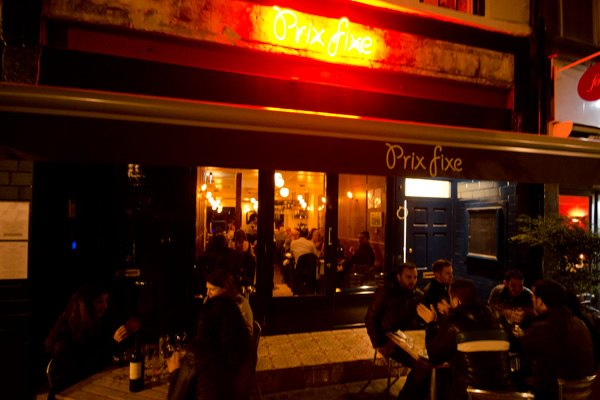
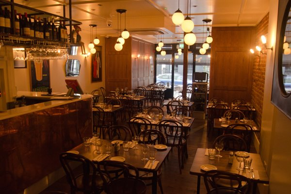
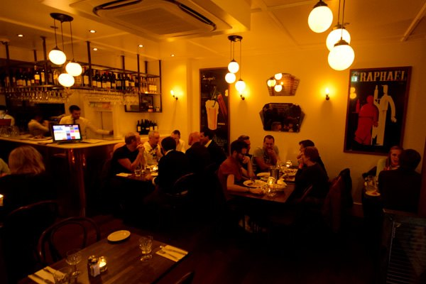
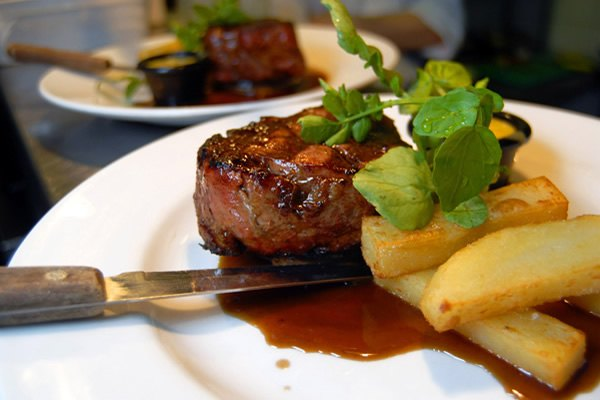
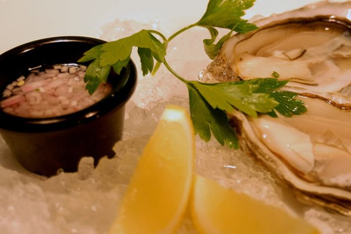
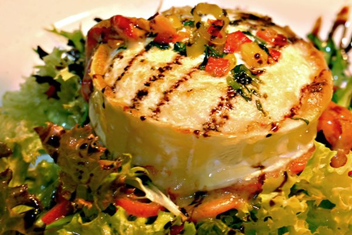

Set lunch
£19.90
Two courses. French onion soup, crab thermidor, ox cheek bourguignon, duck confit and more.
Daily, 12pm – 4pm
39 Dean Street · Soho
A charming French brasserie between the theatres. Two courses from £19.90, steak frites done properly, and candlelight with a pianist after dark.

Prix fixe means a fixed price. Pick any starter and main from the set menu, and add a steak from the à la carte for a small supplement.
Two courses. French onion soup, crab thermidor, ox cheek bourguignon, duck confit and more.
Two courses, served in good time for curtain up. Shaftesbury Avenue is five minutes' walk.
The full brasserie menu: oysters, foie gras, scallops, chargrilled ribeye and four kinds of steak frites.


The brasserie
At lunch it's quick, bright and informal, ideal for a working lunch. In the evening the lights go down, the candles come out, and one of our rather eccentric pianists takes a seat at the keys.
Downstairs, a private basement dining room seats groups of up to 25.



Travellers' Choice 2026
“Lovely knowledgeable staff who are obviously proud of their food, a really nice ambiance and setting, and the food is simply stunning.”
“Always a creative and sophisticated menu choice… Amazing value and good for vegetarians. In well over 15 years' visits, we've never been disappointed.”
“Never disappoints! This place, the staff, the food, the ambiance, the people watching… Best tartare I've had.”
“One of our go-to places in London, never had a bad meal here… Great atmosphere, great service, great location, excellent value for money.”
“Eclectic menu, all dishes at a great price… steak tartare and oysters, perfectly seasoned, it was wonderful. Service was great too.”
“Food was great & staff helpful. The manager even came out after we left to say thanks and shake my husband's hand.”
“The food and service are the best I had in England… Had the steak tartare and was an absolute délice!”
Reviews and summary from Tripadvisor. Harden's calls it “splendid for pre-theatre”.
Réservations
Book online with instant confirmation for up to 10 guests. For larger parties or the private room, send us a group enquiry.